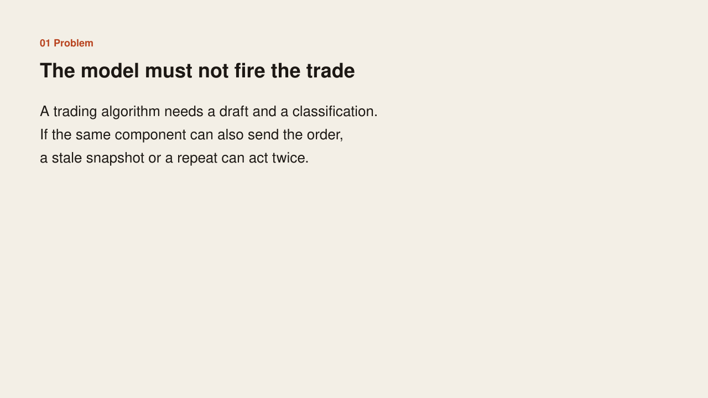
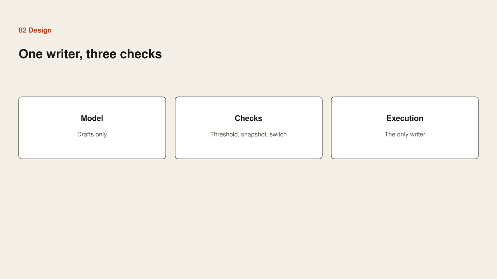
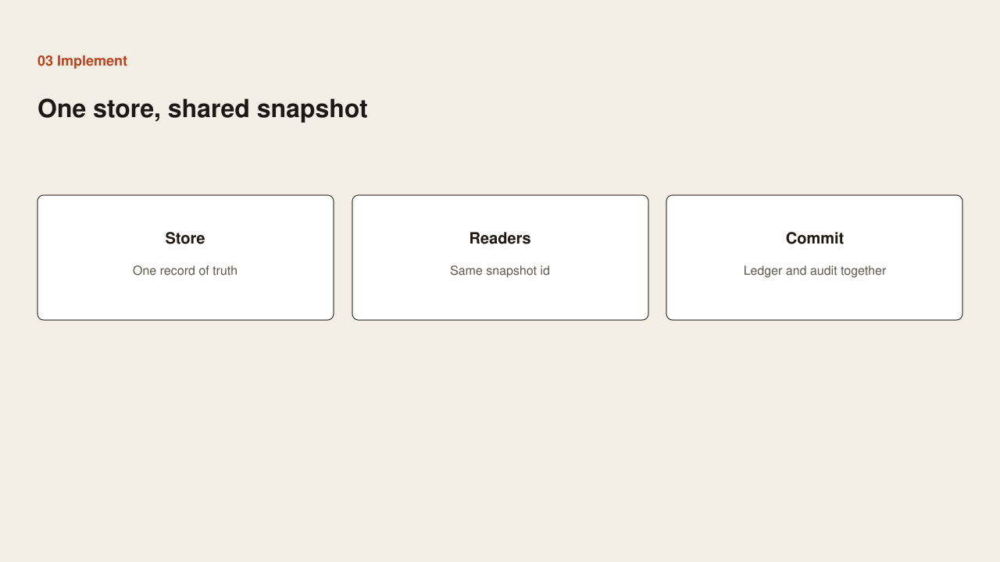
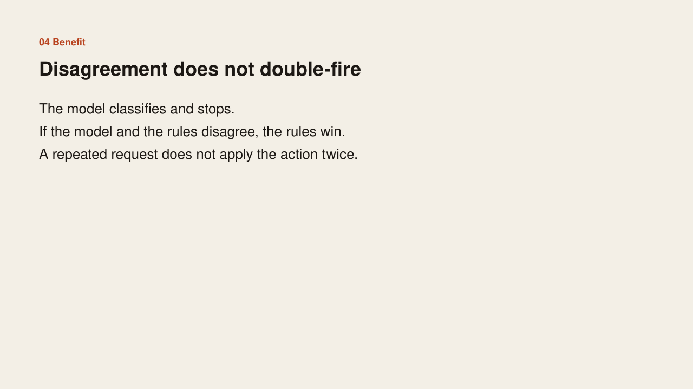

Problem
Problem

A trading algorithm needs a draft and a classification. If the same component can also send the order, a stale snapshot or a repeat can act twice.
Case study
Problem

A trading algorithm needs a draft and a classification. If the same component can also send the order, a stale snapshot or a repeat can act twice.
Design

The model drafts only. Three checks have to be true before anything is sent: the score clears a hard threshold, the snapshot is still current, and the kill switch is off. One execution service is the only writer.
Implementation

One store is the record of truth. Every reader uses the same snapshot id. The ledger row and the audit row commit together. If the model and the rules disagree, the rules win.
Benefit

The model classifies and stops. A disagreement does not fire. A repeated request does not apply the action twice.